I have added the appendix with some item descriptions in the OneDrive folder here (as I keep forgetting what the item codes refer to!). I have also added the student, parent and school surveys to this folder, and the code books here.
We can include code snippets using the code blocks:
We need to load the packages and data but don’t need to run this each time
!! in fact, this code won’t run for you, as it tries to load the SSES file from a location on my laptop. So I would select the install packages lines and library lines, and run them - you will have the SSES dataframe loaded anyway so the other code blocks should run for you !!
Weighting
As we are getting into the analysis it is time to add the weightings. There is an overall weighted curiosity item (CUR_WLE_ADJ) but I assume that combines all five curiosity items. We might want to have a weighted version of just one item, e.g STA_CUR01. We can use the packages survey and srvyr, like this:
# See this helpful video: https://www.youtube.com/watch?v=brxx81U6N1o# There doesn't seem to be any difference with the weighted version, but I think I might be doing this wrong!SSESwght<-SSES%>%as_survey_rep(variables=c(STA_CUR01), type ="JK1", weights=WT2019,repweights = rwgt1:rwgt76, scale=(75/76),combined_weights =TRUE)SSESwght<-SSESwght$variablesSSESwght<-SSESwght%>%rename(STA_CUR01Wght=STA_CUR01)SumNoW<-SSES%>%group_by(SiteID)%>%summarise(meancur=mean(STA_CUR01,na.rm=TRUE))SSESwght<-cbind(SSES, SSESwght)SumW<-SSESwght%>%group_by(SiteID)%>%summarise(meancur=mean(STA_CUR01Wght,na.rm=TRUE))SumNoW
Curiosity, in the epistemic sense has been defined as individual’s search for intellectual stimulation (vonstumm2011?);
Loewenstein (loewenstein1994psychology?) argued that an individual becomes curious when they are made aware of an ‘information gap’ in their understanding .
The OECD ((oecd2021?)) concluded that the Survey on Social and Emotional Skills (SSES) showed students’ curiosity falling between ages 10 and 15 and explained this in terms of ‘developmental factors’ and expectations within education systems for students to be compliant (p.3). The report also claimed that ‘triangulation’, which involved comparing students’ self-reported curiosity to parents’ and teachers’ ratings of students’ curiosity, confirmed this trend (p.116).
There are reasons to be cautious about this form of triangulation. Studies have shown that teachers’ ratings of students’ curiosity corresponded more closely with IQ than students’ self-reports (Maw and Maw, 1961) or observational reports of their curiosity ((coie1974?)). Vidler and Levine ((vidler1976?)) argued that correspondence between teacher and students’ own ratings their curiosity could be improved with alternative measures of curiosity but offer no evidence they took measures of students’ intelligence into account as a mediating factor.
Numerous authors have assumed that children’s curiosity falls during their time at school (e.g., (clark2019?); (gordon2015?); (jirout?); (jirout2022?); Tor and Gordon, 2020; (zimmerman2022?)), often citing Engel’s ((engel2015?)) claim that students’ rate of questioning declines as they get older. There are two issues with this claim. The first is the lack of evidence supporting it. The oft-cited study by Tizard and Hughes (1984), for example, only looked at the relative frequency with which preschool children asked questions at home and at nursery, and so their conclusions cannot be extrapolated to older children. Second, the frequency with which children ask questions is a relatively poor proxy for curiosity. Students ask questions for a variety of reasons, and only some of these can reasonably be described as motivated by curiosity.
Authors of the OECD’s justification for the SSES’s assessment framework ((assessme2019?)) claimed that two previous studies showed a decline in children’s curiosity. Whilst Soto et al. ((soto2011?)) did use a sample of over a million participants, recruited via the internet, and ranging in age from 10 to 65, the study did not assess curiosity per se, finding instead a decline in openness to experience during adolescent, a trend which reversed during adulthood. De Haan et al. ((dehaan2017?)) found a steep decline in Belgian children’s curiosity between the ages of 6 and 17. The study used a longitudinal design, meaning that curiosity was assessed over time in the same children, but used mothers’ assessment of children’s curiosity alone, without any further validation of this form of measurement. The study sample also decreased from 579 children in the youngest age group to 424 in the eldest, meaning that the final assessment point is likely to be less reliable than the initial point.
In summary, the reliability of previous claims that curiosity declines as children progress through their schooling is variable. Further, all studies cited above were conducted on what Heinrich et al. ((henrich2010?)) have called ‘WEIRD’– Western, Educated, Industrialized, Rich, and Democratic – populations. Heinrich et al. argue that it cannot be assumed that these populations are psychologically representative of the global population, and so findings cannot be straightforwardly generalised.
Because of these factors, the OECD SSES study would make a valuable contribution to the literature within this area. Conducted across 10 cities globally, some of which fall outside Heinrich et al.’s ‘WEIRD’ designation, it can arguably make a greater claim to generalisability than the studies cited above. The addition of triangulation potentially adds a further dimension to the study’s reliability. The finding that school students’ curiosity does decline between the ages of 10 and 15 across the 10 cities, if accurate, would therefore be a significant one.
The OECD data set
Since 2010, the OECD has been interested in carrying out research into young people’s social and emotional skills leading to the development of the Survey on Social and Emotional Skills (SSES) (oecd2021?). They survey was designed to report skills across five domains (open-mindedness, task performance, engaging with others, collaboration and emotional regulation) which mirrored the big five personality traits (goldberg1993?). Within the domain of open-mindedness three skills were examined, curiosity, tolerance and creativity.
The survey was delivered online and completed by two cohorts of students aged 10 and 15-years old.
Students in cities shown in table x took part in the data collection
Table x: Participating cities
Participating Cities
Bogotá, Colombia
Daegu, South Korea
Helsinki, Finland
Houston, Texas, United States
Istanbul, Turkey
Manizales, Colombia
Moscow, Russian Federation
Ottawa, Ontario, Canada
Sintra, Portugal
Suzhou, People’s Republic of China
The gender distribution of participating students is shown in table y.
n
youngtotal "Younger cohort total" 31187
oldtotal "Older cohort total" 29798
total "Total" 61010
# Set the variable we are interested in to numeric and characterSSES$st_anxtest<-as.numeric(SSES$st_anxtest)SSES$STA_CUR01<-as.numeric(SSES$STA_CUR01)SSES$Gender_Std<-as.character(SSES$Gender_Std)# Mean curiosity score by country# Note I haven't used the weighted curiosity scores, I would need to do that properly in a more thorough analysisCountCur<-SSES%>%select(SiteID, STA_CUR01)%>%group_by(SiteID)%>%summarise(MeanCur=mean(STA_CUR01, na.rm=TRUE))CountCur$SiteID<-as_factor(CountCur$SiteID)ggplot(CountCur, aes(x=reorder(SiteID, -MeanCur), y=MeanCur, fill=SiteID))+geom_col()+xlab("City")+ylab("Mean curiosity score")+theme(axis.text.x =element_text(angle =90, vjust =0.5, hjust=1))
SSEStest<-SSES%>%na.omit()df <-data.frame(SSES$STA_CUR01, SSES$STA_CUR02, SSES$STA_PER07, SSES$STA_PER08,SSES$st_anxtest, as.numeric(SSES$Gender_Std))cor<-cor(x =as.matrix(df), method ="pearson", use ="pairwise.complete.obs")corrplot(cor, order ='AOE')
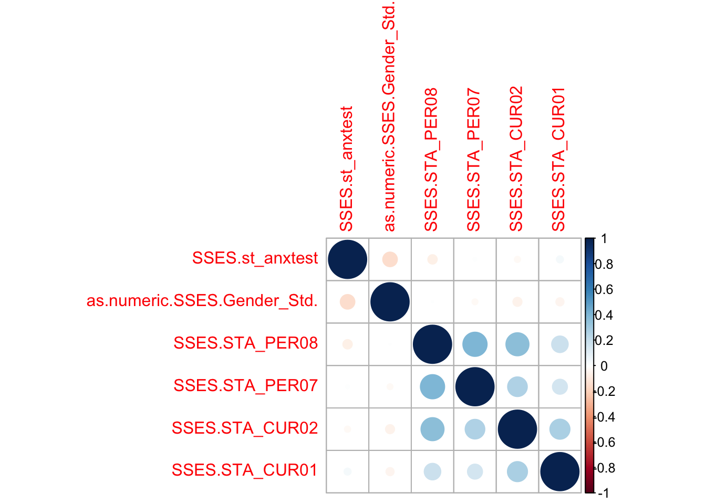
cor<-cor.test(SSES$STA_CUR01, SSES$st_anxtest)cor
Pearson's product-moment correlation
data: SSES$STA_CUR01 and SSES$st_anxtest
t = 8.1218, df = 57529, p-value = 4.685e-16
alternative hypothesis: true correlation is not equal to 0
95 percent confidence interval:
0.02567784 0.04200201
sample estimates:
cor
0.03384218
# Create a contingency table for the Wilcox Rank Testconttab<-xtabs(~ Gender_Std + STA_CUR01, data=SSES)# Convert the table to a data-frame as that is what wilcox.test wants! (and make the varibales numeric)conttab<-as.data.frame(conttab)conttab$Gender_Std<-as.numeric(conttab$Gender_Std)conttab$STA_CUR01<-as.numeric(conttab$STA_CUR01)# For fun plot the graphs - there looks to be very little difference by genderggplot(data=conttab, aes(x=STA_CUR01, y=Freq, fill=Gender_Std))+geom_col(stat='identity')+facet_grid(.~Gender_Std)+theme(legend.position ="null")
Warning in geom_col(stat = "identity"): Ignoring unknown parameters: `stat`
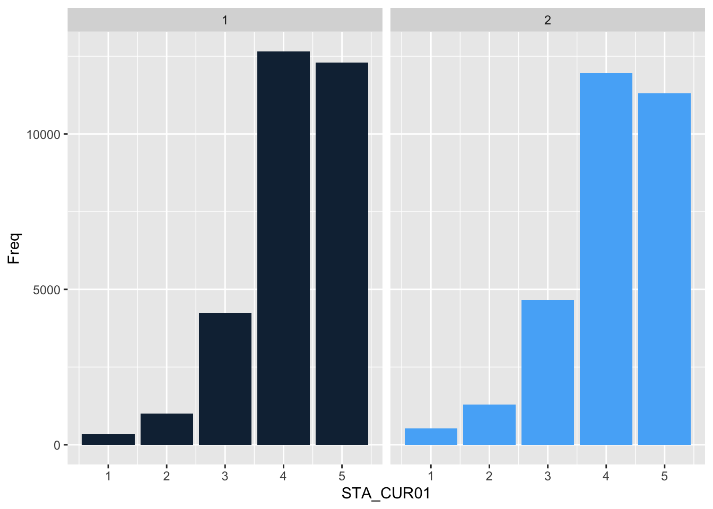
# Run the wilcox test - which returns p=1 so no difference!wilcox.test(STA_CUR01 ~ Gender_Std, data=conttab)
Warning in wilcox.test.default(x = DATA[[1L]], y = DATA[[2L]], ...): cannot
compute exact p-value with ties
Wilcoxon rank sum test with continuity correction
data: STA_CUR01 by Gender_Std
W = 12.5, p-value = 1
alternative hypothesis: true location shift is not equal to 0
df <-data.frame(SSES$STA_CUR01, SSES$STA_CUR02, SSES$STA_PER07, SSES$STA_PER08)cor(x =as.matrix(df), method ="pearson", use ="pairwise.complete.obs")
Cronbach's alpha for the 'df' data-set
Items: 8
Sample units: 61010
alpha: 0.795
#I think I've created my first 'meaningful' graphic!CanCurLang<-SSES%>%select(SiteID, LANG, STA_CUR01)%>%# Select cur01, city and lang variablesfilter(SiteID=="01")%>%# Filter for Ottawadroplevels() # To prevent the levels for other countries confusing the table (not sure what this means or if necessary)# plot resultsggplot(data = CanCurLang) +geom_mosaic(aes(x =product(STA_CUR01, LANG), fill=LANG))+xlab("Language")+ylab("How curious...")
Warning: `unite_()` was deprecated in tidyr 1.2.0.
ℹ Please use `unite()` instead.
ℹ The deprecated feature was likely used in the ggmosaic package.
Please report the issue at <https://github.com/haleyjeppson/ggmosaic>.
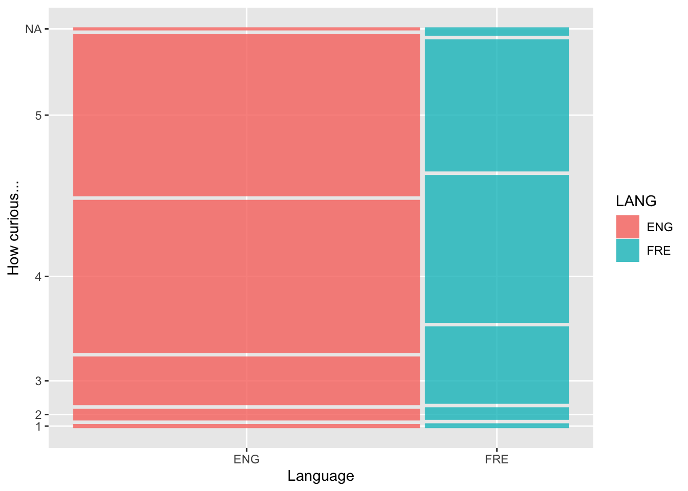
USCurLang<-SSES%>%select(SiteID, LANG, STA_CUR01)%>%# City, Lang, Curiosityfilter(SiteID=="02")%>%# Filter Houstondroplevels() # To prevent the levels for other countries confusing the tableggplot(data = USCurLang) +geom_mosaic(aes(x =product(STA_CUR01, LANG), fill=LANG))+xlab("Language")+ylab("How curious...")
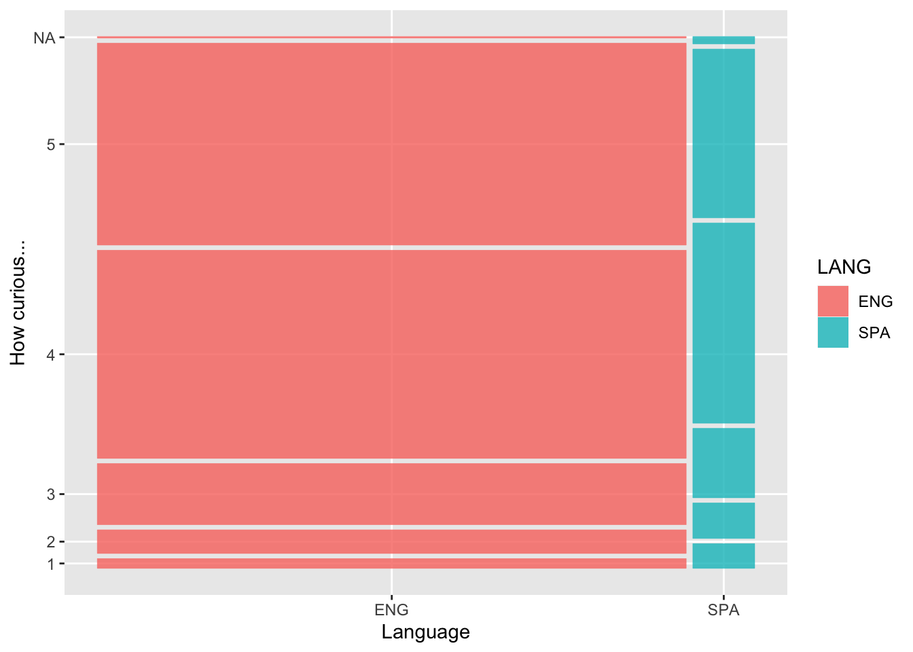
#I added parts of the teacher and parent databases to the student one. OECD presented this as 'triangulation' (not all CUR items available from teacher questionnaire). Previous attempts to do this showed that teacher curiosity assessments were influenced by student attainment. Results below seem to show this too (teacher CUR05 correlated with reading scores, student and parent CUR05 correlate with one another).# Load the sav file (the SPSS file)# SSES<-read_sav("/Users/cr/Downloads/INT_01_ST_(2021.04.14)_Public.sav")SSES<-read_sav("/Users/k1765032/Downloads/INT_01_ST_(2021.04.14)_Public.sav")# Get rid of troublesome SPSS formatSSES<-zap_label(SSES)# Set the variable we are interested in to numeric and character# Parent database# SSESP<-read_sav("/Users/cr/Downloads/INT_02_PA_(2021.04.14)_Public.sav")SSESP<-read_sav("/Users/k1765032/Downloads/INT_02_PA_(2021.04.14)_Public.sav")# Get rid of troublesome SPSS formatSSESP<-zap_label(SSESP)# Set the variable we are interested in to numeric and character# Teacher database# SSEST<-read_sav("/Users/cr/Downloads/INT_03_TC_(2021.04.14)_Public.sav")SSEST<-read_sav("/Users/k1765032/Downloads/INT_03_TC_(2021.04.14)_Public.sav")# Get rid of troublesome SPSS formatSSEST<-zap_label(SSEST)# Creating database with some parental dataSSESParents <-left_join( SSES %>%select(Username_Std, Sgrade_Read_Lang, CohortID, STA_CUR01, STA_CUR02, STA_CUR03, STA_CUR04, STA_CUR05, STA_CUR06, STA_CUR07, STA_TOL01, STA_TOL02), SSESP %>%select(Username_Std, PAA_CUR01, PAA_CUR02, PAA_CUR03, PAA_CUR04, PAA_CUR05, PAA_CUR06, PAA_CUR07, PAA_CUR08),by=c("Username_Std"))# Correlation test to check it workscor.test(SSESParents$STA_CUR01, SSESParents$PAA_CUR01)
Pearson's product-moment correlation
data: SSESParents$STA_CUR01 and SSESParents$PAA_CUR01
t = 26.806, df = 34399, p-value < 2.2e-16
alternative hypothesis: true correlation is not equal to 0
95 percent confidence interval:
0.1326796 0.1533818
sample estimates:
cor
0.1430463
# Creating database with some teacher data addedSSESParentsandTeachers <-left_join( SSESParents %>%select(Username_Std, Sgrade_Read_Lang, CohortID, STA_CUR01, STA_CUR02, STA_CUR03, STA_CUR04, STA_CUR05, STA_CUR06, STA_CUR07, STA_TOL01, STA_TOL02, PAA_CUR01, PAA_CUR02, PAA_CUR03, PAA_CUR04, PAA_CUR05, PAA_CUR06, PAA_CUR07, PAA_CUR08), SSEST %>%select(Username_Std, TCA_CUR05, TCA_CUR06, TCA_CUR07),by=c("Username_Std"))# Not sure whether all this is necessary but was getting error messages about something not being numeric # For me, this runs without the conversion! # SSESParentsandTeachers$Sgrade_Read_Lang<-as.numeric(SSES$Sgrade_Read_Lang)#SSESParentsandTeachers$TCA_CUR05<-as.numeric(SSES$TCA_CUR05)#SSESParentsandTeachers$TCA_CUR06<-as.numeric(SSES$TCA_CUR06)#SSESParentsandTeachers$TCA_CUR07<-as.numeric(SSES$TCA_CUR07)#SSESParentsandTeachers$PAA_CUR01<-as.numeric(SSES$PAA_CUR01)#SSESParentsandTeachers$PAA_CUR02<-as.numeric(SSES$PAA_CUR02)#SSESParentsandTeachers$PAA_CUR03<-as.numeric(SSES$PAA_CUR03)#SSESParentsandTeachers$PAA_CUR04<-as.numeric(SSES$PAA_CUR04)#SSESParentsandTeachers$PAA_CUR05<-as.numeric(SSES$PAA_CUR05)#SSESParentsandTeachers$PAA_CUR06<-as.numeric(SSES$PAA_CUR06)#SSESParentsandTeachers$PAA_CUR07<-as.numeric(SSES$PAA_CUR07)#SSESParentsandTeachers$PAA_CUR08<-as.numeric(SSES$PAA_CUR08)# Correlation test to check it workscor.test(SSESParentsandTeachers$Sgrade_Read_Lang, SSESParentsandTeachers$PAA_CUR01)
Pearson's product-moment correlation
data: SSESParentsandTeachers$Sgrade_Read_Lang and SSESParentsandTeachers$PAA_CUR01
t = 15.436, df = 31258, p-value < 2.2e-16
alternative hypothesis: true correlation is not equal to 0
95 percent confidence interval:
0.07596468 0.09796804
sample estimates:
cor
0.08697697
# Database comparing reading test scores to parental, teacher and self-assessed like learning new thingsdfPT <-data.frame(SSESParentsandTeachers$Sgrade_Read_Lang, SSESParentsandTeachers$TCA_CUR05, SSESParentsandTeachers$STA_CUR05, SSESParentsandTeachers$PAA_CUR05)PTTab<-cor(x =as.matrix(dfPT), method ="pearson", use ="pairwise.complete.obs")library(corrplot)# Database comparing reading test scores to parental, teacher and self-assessed like learning new thingscorPTCur<-cor(x =as.matrix(dfPT), method ="pearson", use ="pairwise.complete.obs")colnames(corPTCur) <-c("Reading scores", "Teachers:CUR05", "Parents:CUR05", "Students:CUR05")rownames(corPTCur) <-c("Reading scores", "Teachers:CUR05", "Parents:CUR05", "Students:CUR05")# Now with added coefficients!corrplot(corPTCur, order ='AOE', addCoef.col ='black')
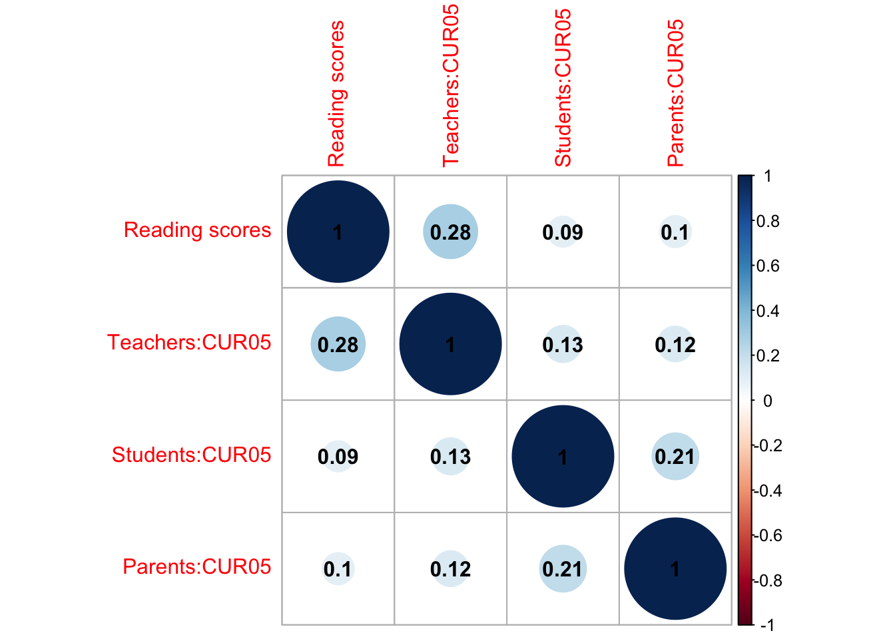
# I didn't know you could do that!
# This section isn't running for me - there seems to be a missing CohortID variable in the SSESSParentsandTeachers data frame# Fixed?#What happens to students' curiosity (CUR01) and questioning (CUR03) between the ages of 10 and 15? How well do parent perceptions correlate?#Combining the dataPSCurDiff<-SSESParentsandTeachers %>%group_by(CohortID) %>%select(CohortID, PAA_CUR01, PAA_CUR03, STA_CUR01, STA_CUR03) %>%summarise(CurSt =mean(STA_CUR01, na.rm=TRUE),QuSt =mean(STA_CUR03, na.rm=TRUE),CurPa =mean(PAA_CUR01, na.rm=TRUE),QuPa =mean(PAA_CUR03, na.rm=TRUE)) %>%arrange(CohortID)PSCurDiff<-PSCurDiff%>%pivot_longer(-CohortID, names_to ="GroupPerception", values_to ="Scores")print(PSCurDiff)
# This data plotted...ggplot(PSCurDiff, aes(x=reorder(GroupPerception, new), y=Scores, fill=CohortID))+geom_bar(stat='identity', position =position_dodge2())+theme(axis.text.x =element_text(angle =90, vjust =0.5, hjust=1))+ggtitle("Perceptions of Students' Curiosity in and out of School by Group")+xlab("Perception of Students' Curiosity")+ylab("Rating Group")+coord_cartesian(ylim =c(3.5, 4.5)) +scale_fill_discrete(labels=c('Age 10', 'Age 15')) +geom_text(aes(label =round(Scores, 1)), position =position_dodge(width =0.9), vjust =-0.25)
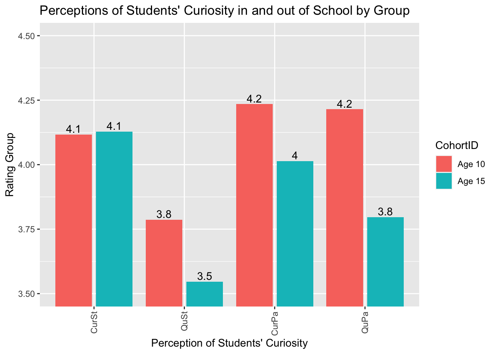
# This section isn't running for me - there seems to be a missing CohortID variable in the SSESSParentsandTeachers data frameSSESSParentsandTeachers data frame# Fixed?#how much does the gap between CUR05 (like to learn new things) and CUR07 (love learning new things at school) grow for each site between ages 10 and 15?# Slightly improved version...# Table of Curiosity Drop by GroupPTSCurDiff<-SSESParentsandTeachers %>%group_by(CohortID) %>%select(CohortID, PAA_CUR05, PAA_CUR07, TCA_CUR05, TCA_CUR07, STA_CUR05, STA_CUR07) %>%summarise(CuriosityStudent =mean(STA_CUR05, na.rm=TRUE),InSchCurStudent =mean(STA_CUR07, na.rm=TRUE),CuriosityParents =mean(PAA_CUR05, na.rm=TRUE),InSchCurParents =mean(PAA_CUR07, na.rm=TRUE),CuriosityTeachers =mean(TCA_CUR05, na.rm=TRUE),InSchCurTeachers =mean(TCA_CUR07, na.rm=TRUE)) %>%arrange(CohortID)print(PTSCurDiff)
# A tibble: 3 × 7
CohortID CuriosityStudent InSchCurStudent CuriosityParents InSchCurParents
<chr+lbl> <dbl> <dbl> <dbl> <dbl>
1 "" NaN NaN NaN NaN
2 "1" [Younge… 4.29 4.09 4.23 4.17
3 "2" [Older … 4.16 3.80 4.06 3.97
# ℹ 2 more variables: CuriosityTeachers <dbl>, InSchCurTeachers <dbl>
#This data plotted...ggplot(PTSCurDiff, aes(x=reorder(GroupPerception, new), y=Scores, fill=CohortID))+geom_bar(stat='identity', position =position_dodge2())+theme(axis.text.x =element_text(angle =90, vjust =0.5, hjust=1))+ggtitle("Perceptions of Students' Curiosity in and out of School by Group")+xlab("Perception of Students' Curiosity")+ylab("Rating Group")+coord_cartesian(ylim =c(3.5, 4.5)) +scale_fill_discrete(labels=c('Age 10', 'Age 15')) +geom_text(aes(label =round(Scores, 1)), position =position_dodge(width =0.9), vjust =-0.25)
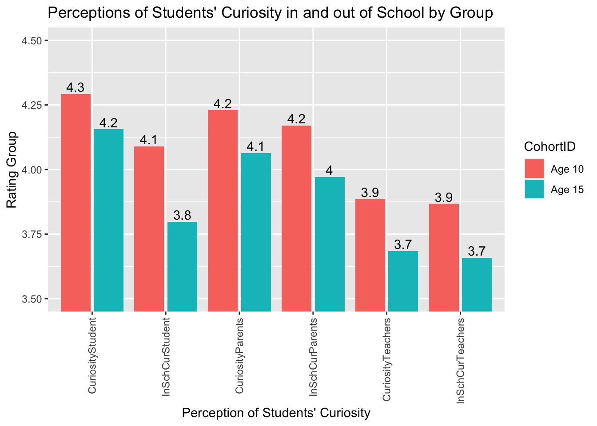
# This section isn't running for me - there seems to be a missing CohortID variable in the SSESSParentsandTeachers data frame# Another graph, with the differences between 05 and 07 calculated for each groupPTSCurDiff2<-SSESParentsandTeachers %>%group_by(CohortID) %>%select(CohortID, PAA_CUR05, PAA_CUR07, TCA_CUR05, TCA_CUR07, STA_CUR05, STA_CUR07) %>%summarise(meanNS =mean(STA_CUR05, na.rm=TRUE),meanS =mean(STA_CUR07, na.rm=TRUE),SchDiffStu = meanS-meanNS,meanNSPa =mean(PAA_CUR05, na.rm=TRUE),meanSPa =mean(PAA_CUR07, na.rm=TRUE),SchDiffPrt = meanSPa-meanNSPa,meanNSTe =mean(TCA_CUR05, na.rm=TRUE),meanSTe =mean(TCA_CUR07, na.rm=TRUE),SchDiffTch = meanSTe-meanNSTe,students =n()) %>%filter(!is.na(meanS)) %>%arrange(CohortID)# I imagine all these steps could be combined...PTSCurDiff2 <-data.frame(PTSCurDiff2)PTSCurDiff2<-PTSCurDiff2%>%select(-meanS, -meanNS, -meanSPa, -meanNSPa, -meanSTe, -meanNSTe, -students)PTSCurDiff2<-PTSCurDiff2 %>%pivot_longer(-CohortID, names_to ="Group", values_to ="MeanDiffSch")print(PTSCurDiff2)#Graph showing perceptions of the difference between students' CUR05 (like to learn) and students' 07 (love to learn in school) for students, parents' and teachersggplot(PTSCurDiff2, aes(x=Group, y=MeanDiffSch, fill=CohortID))+geom_bar(stat='identity', position =position_dodge2())+theme(axis.text.x =element_text(angle =90, vjust =0.5, hjust=1))
# Just for interest, to show how the changes in various measures alighn with students' self-reported curiosityCurByNumbers01<-SSES%>%group_by(STA_CUR01)%>%summarise(MeanRead =mean(Sgrade_Read_Lang, na.rm=TRUE), MeanMath =mean(Sgrade_Math, na.rm=TRUE),MeanArt =mean(Sgrade_Arts, na.rm=TRUE),MeanInformed =mean(STQM02507, na.rm=TRUE),MeanFixed =mean(STQM04403, na.rm=TRUE),MeanAnx =mean(STQM04201, na.rm=TRUE),MeanComp =mean(STQM03804, na.rm=TRUE),MeanRdBk =mean(STQM03603, na.rm=TRUE),MeanBks =mean(STQM01001, na.rm=TRUE),MeanMotherListens =mean(STQM02802A, na.rm=TRUE),MeanFatherUnderstands =mean(STQM02904B, na.rm=TRUE),MeanSatisfaction =mean(STQM01901, na.rm=TRUE),MeanTol =mean(STA_TOL08, na.rm=TRUE),MeanCre =mean(STA_CRE02, na.rm=TRUE),MeanOpt =mean(STA_OPT02, na.rm=TRUE),MeanPer =mean(STA_PER08, na.rm=TRUE),MeanAnger =mean(STA_EMO08, na.rm=TRUE),MeanSES =mean(STISEI_ST, na.rm=TRUE),Total =n())CurByNumbers01V2 <- CurByNumbers01[-c(6), ]ggplot(CurByNumbers01V2, aes(x=STA_CUR01, y=MeanRead))+geom_bar(stat='identity', fill="skyblue")+theme(axis.text.x =element_text(angle =90, vjust =0.5, hjust=1))
#I think SSES$STISEI_ST might be their socioeconomic indicator. I wanted to test the correlations between this, curiosity and reading scores. The linear model gives significant results but low R2 value.cor.test(SSES$STISEI_ST, SSES$Sgrade_Read_Lang)
Pearson's product-moment correlation
data: SSES$STISEI_ST and SSES$Sgrade_Read_Lang
t = 22.653, df = 41184, p-value < 2.2e-16
alternative hypothesis: true correlation is not equal to 0
95 percent confidence interval:
0.1013880 0.1204658
sample estimates:
cor
0.1109371
cor.test(SSES$STISEI_ST, SSES$STA_CUR01)
Pearson's product-moment correlation
data: SSES$STISEI_ST and SSES$STA_CUR01
t = 13.114, df = 49263, p-value < 2.2e-16
alternative hypothesis: true correlation is not equal to 0
95 percent confidence interval:
0.05017656 0.06777595
sample estimates:
cor
0.05898084
cor.test(SSES$Sgrade_Read_Lang, SSES$STA_CUR01)
Pearson's product-moment correlation
data: SSES$Sgrade_Read_Lang and SSES$STA_CUR01
t = 17.013, df = 49571, p-value < 2.2e-16
alternative hypothesis: true correlation is not equal to 0
95 percent confidence interval:
0.06743323 0.08493690
sample estimates:
cor
0.07619093
Warning: In lm.fit(x, y, offset = offset, singular.ok = singular.ok, ...) :
extra argument 'na.rm' will be disregarded
# This is the same thing, passing the dataframe to data, and avoiding the repeated $ gets rid of the warnings!CurSES<-lm(data=SSES, Sgrade_Read_Lang ~ STA_CUR01 + STISEI_ST, na.rm=TRUE)
Warning: In lm.fit(x, y, offset = offset, singular.ok = singular.ok, ...) :
extra argument 'na.rm' will be disregarded
# This looks like a neater way of doing itsummary(CurSES)
Call:
lm(formula = Sgrade_Read_Lang ~ STA_CUR01 + STISEI_ST, data = SSES,
na.rm = TRUE)
Residuals:
Min 1Q Median 3Q Max
-36.977 -6.352 1.164 7.249 19.144
Coefficients:
Estimate Std. Error t value Pr(>|t|)
(Intercept) 28.72821 0.29667 96.84 <2e-16 ***
STA_CUR01 0.73725 0.05658 13.03 <2e-16 ***
STISEI_ST 0.69527 0.03184 21.84 <2e-16 ***
---
Signif. codes: 0 '***' 0.001 '**' 0.01 '*' 0.05 '.' 0.1 ' ' 1
Residual standard error: 10.16 on 41110 degrees of freedom
(19897 observations deleted due to missingness)
Multiple R-squared: 0.01634, Adjusted R-squared: 0.01629
F-statistic: 341.4 on 2 and 41110 DF, p-value: < 2.2e-16
report(CurSES)
We fitted a linear model (estimated using OLS) to predict Sgrade_Read_Lang with
STA_CUR01 and STISEI_ST (formula: Sgrade_Read_Lang ~ STA_CUR01 + STISEI_ST).
The model explains a statistically significant and very weak proportion of
variance (R2 = 0.02, F(2, 41110) = 341.42, p < .001, adj. R2 = 0.02). The
model's intercept, corresponding to STA_CUR01 = 0 and STISEI_ST = 0, is at
28.73 (95% CI [28.15, 29.31], t(41110) = 96.84, p < .001). Within this model:
- The effect of STA CUR01 is statistically significant and positive (beta =
0.74, 95% CI [0.63, 0.85], t(41110) = 13.03, p < .001; Std. beta = 0.06, 95% CI
[0.05, 0.07])
- The effect of STISEI ST is statistically significant and positive (beta =
0.70, 95% CI [0.63, 0.76], t(41110) = 21.84, p < .001; Std. beta = 0.11, 95% CI
[0.10, 0.12])
Standardized parameters were obtained by fitting the model on a standardized
version of the dataset. 95% Confidence Intervals (CIs) and p-values were
computed using a Wald t-distribution approximation.
# There is no science test score. Oddly, though, teachers appear to have been asked to rate predict how well students would have done on a phantom science test.# Item TCQM03003 is teachers' predictions about students' performancedf<-SSEST %>%select(TCQM03001, TCQM03002, TCQM03003, TCQM03004, TCA_CUR05)# Removing item 6 (don't know)df <-subset(df, TCQM03001 !=6) df <-subset(df, TCQM03002 !=6) df <-subset(df, TCQM03003 !=6) df <-subset(df, TCQM03004 !=6) cor<-cor(x =as.matrix(df[1:5]), method ="pearson", use ="pairwise.complete.obs")colnames(cor) <-c("Predicted reading scores", "Predited maths Scores", "Predicted science scores", "Predicted arts scores", "Teacher's curiosity assessment")rownames(cor) <-c("Predicted reading scores", "Predited maths Scores", "Predicted science scores", "Predicted arts scores", "Teacher's curiosity assessment")corrplot(cor, order ='AOE', addCoef.col ='black')
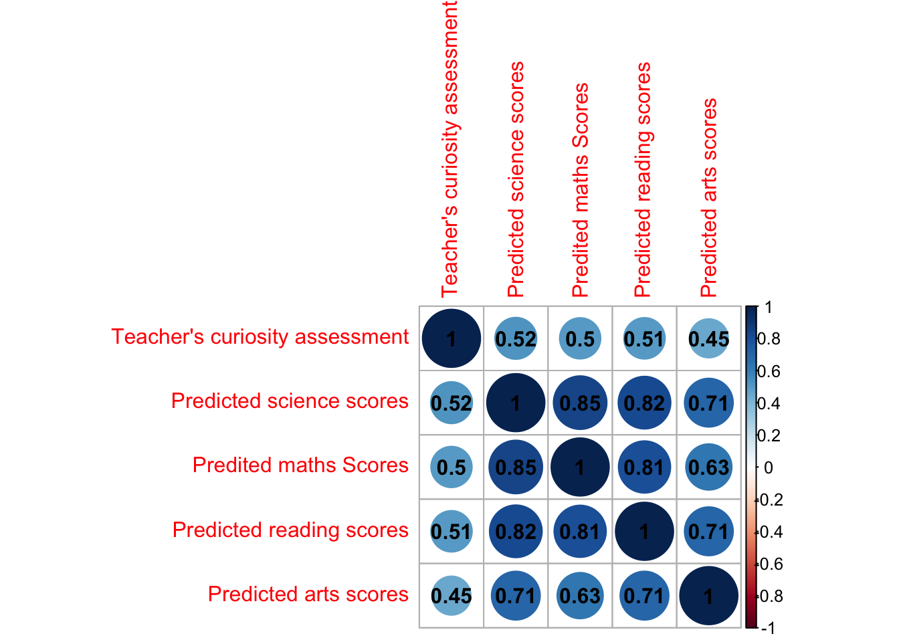
# Marginally higher correlation between teachers' perceptions of students' curiosity and their predictions about science test performance than between curiosity and performance in any other testsummary(lm(data=df, TCQM03003 ~ TCA_CUR05))
Call:
lm(formula = TCQM03003 ~ TCA_CUR05, data = df)
Residuals:
Min 1Q Median 3Q Max
-3.1473 -0.5396 0.0681 0.4604 3.2835
Coefficients:
Estimate Std. Error t value Pr(>|t|)
(Intercept) 1.108757 0.019656 56.41 <2e-16 ***
TCA_CUR05 0.607701 0.005051 120.32 <2e-16 ***
---
Signif. codes: 0 '***' 0.001 '**' 0.01 '*' 0.05 '.' 0.1 ' ' 1
Residual standard error: 0.8301 on 38902 degrees of freedom
(34 observations deleted due to missingness)
Multiple R-squared: 0.2712, Adjusted R-squared: 0.2712
F-statistic: 1.448e+04 on 1 and 38902 DF, p-value: < 2.2e-16
# Teachers' curiosity ratings of students appears to explain around 27% of the variance in their ratings of their science ability
Potential questions to explore
• Does the language of the test matter? Is there a variation in response according to the language respondents have been given the test in (e.g. Houston seems to have been administered in English and Spanish; Ottawa in French and English)? Obviously there may be other differences between e.g. the French- and English-speaking cohorts in Ottawa, but I imagine it would be possible to control for these to a degree.
• Your finding that Finnish students aren’t very curious could be worth exploring further. They’re also the students who find science least interesting (according to CUR08). Is there a way to link cities/countries to their success in the last round of PISA? It would be interesting to try to explain those findings, especially where there are discrepancies…
Sadly it looks like you can’t get city level data out of the main PISA data set.
• Some of the Tolerance items correlate as well with the curiosity items as the curiosity items do with one another, esp TOL02 Ask questions about other cultures ; TOL05 Like hearing about other cultures and religions , which is potentially interesting, esp TOL05. I haven’t tested corplot yet, but it might be nice for showing this.
• An analysis of patterns of change of curiosity with age, comparing in school and out of school curiosity.
Accounting for the drop in curiosity
# Create summary ofSTA_CUR01 and wellbeing and belong (do add other variables!) for each siteCountrydrop<-SSES%>%select(CohortID, SiteID, STA_CUR01, st_wellbeing, st_belong)%>%group_by(SiteID,CohortID )%>%summarise(MeanCur =mean(STA_CUR01, na.rm=TRUE), MeanWb =mean(st_wellbeing, na.rm=TRUE),MeanBel =mean(st_belong, na.rm=TRUE))
`summarise()` has grouped output by 'SiteID'. You can override using the
`.groups` argument.
# Remove the NA rowCountrydrop<-Countrydrop[-1,]# Pivot to create columns, side by side, for the yearsCountrydrop<-pivot_wider(Countrydrop, names_from ="CohortID", values_from =c("MeanCur","MeanWb","MeanBel"))# Create a data frame of change in each variable across the two cohortsCountrydrop<-Countrydrop%>%mutate(Curchange = MeanCur_1 - MeanCur_2,WBchange = MeanWb_1 - MeanWb_2,Belchange = MeanBel_1 - MeanBel_2)# We can then explore how well different models fit the drip (we could use the Bayesion approach below, but this is the frequentist approach)# I have fitted two simple models here, we will have to play - mod1 - the change in curiosity is explained by change in well being; mod 2 - the change in curiosity is explained by the change in belongingmod1<-lm(data=Countrydrop, Curchange ~ WBchange)mod2<-lm(data=Countrydrop, Curchange ~ Belchange)# We can extract the R2 of each modelsummary(mod1)$r.squared
[1] 0.01643493
summary(mod2)$r.squared
[1] 0.06529067
# And they are both terrible! Well being explains 1% of the variance, belonging 6%mod3<-lm(data=Countrydrop, Curchange ~ Belchange + WBchange)summary(mod3)$r.squared
[1] 0.1230042
# Together they explain 12% of the variance# Let's try it again with the coopertation, empathy, trust, emotional control and optimism variables. Countrydrop<-SSES%>%group_by(SiteID,CohortID)%>%summarise(MeanCur =mean(STA_CUR01, na.rm =TRUE), MeanCo =mean(COO_WLE_ADJ, na.rm =TRUE),MeanEmp =mean(EMP_WLE_ADJ, na.rm =TRUE),MeanTr =mean(TRU_WLE_ADJ, na.rm =TRUE),MeanEmC =mean(EMO_WLE_ADJ, na.rm=TRUE),MeanOpt =mean(OPT_WLE_ADJ, na.rm =TRUE),MeanStr =mean(STR_WLE_ADJ, na.rm =TRUE),MeanAss =mean(ASS_WLE_ADJ, na.rm =TRUE),MeanEn =mean(ENE_WLE_ADJ, na.rm =TRUE),MeanSoc =mean(SOC_WLE_ADJ, na.rm =TRUE),MeanCre =mean(CRE_WLE_ADJ, na.rm =TRUE),MeanTol =mean(TOL_WLE_ADJ, na.rm =TRUE),MeanPer =mean(PER_WLE_ADJ, na.rm =TRUE),MeanRes =mean(RES_WLE_ADJ, na.rm =TRUE),MeanSel =mean(SEL_WLE_ADJ, na.rm =TRUE),MeanEff =mean(EFF_WLE_ADJ, na.rm =TRUE),MeanMot =mean(MOT_WLE_ADJ, na.rm =TRUE))%>%select(CohortID, SiteID, MeanCur, MeanCo, MeanEmp, MeanTr, MeanEmC, MeanOpt, MeanStr, MeanAss, MeanEn, MeanSoc, MeanCre, MeanTol, MeanPer, MeanRes, MeanSel, MeanEff, MeanMot)
`summarise()` has grouped output by 'SiteID'. You can override using the
`.groups` argument.
# Remove the NA rowCountrydrop<-Countrydrop[-1,]# Pivot to create columns, side by side, for the yearsCountrydrop<-pivot_wider(Countrydrop, names_from ="CohortID", values_from =c("MeanCur","MeanCo","MeanEmp","MeanTr","MeanEmC","MeanOpt","MeanStr", "MeanAss", "MeanEn","MeanSoc", "MeanCre", "MeanTol","MeanPer", "MeanRes", "MeanSel","MeanEff","MeanMot"))# Create a data frame of change in each variable across the two cohortsCountrydrop<-Countrydrop%>%mutate(Curchange = MeanCur_1 - MeanCur_2,Cochange = MeanCo_1 - MeanCo_2,Empchange = MeanEmp_1 - MeanEmp_2,Trchange = MeanTr_1 - MeanTr_2,EmCchange = MeanEmC_1 - MeanEmC_2,Optchange = MeanOpt_1 - MeanOpt_2,Strchange = MeanStr_1 - MeanStr_2,Asschange = MeanAss_1 -MeanAss_2,Enchange = MeanEn_1 - MeanEn_2,Socchange = MeanSoc_1 - MeanSoc_2,Crechange = MeanCre_1 - MeanCre_2,Tolchange = MeanTol_1 - MeanTol_2,Perchange = MeanPer_1 - MeanPer_2,Reschange = MeanRes_1 - MeanRes_2,Selchange = MeanSel_1 - MeanSel_2,Effchange = MeanEff_1 - MeanEff_2,Motchange = MeanMot_1 - MeanMot_2)# Doing the modelsmodCo<-lm(data=Countrydrop, Curchange ~ Cochange)modEmp<-lm(data=Countrydrop, Curchange ~ Empchange)modTr<-lm(data=Countrydrop, Curchange ~ Trchange)modEmC<-lm(data=Countrydrop, Curchange ~ EmCchange)modOpt<-lm(data=Countrydrop, Curchange ~ Optchange)modStr<-lm(data=Countrydrop, Curchange ~ Strchange)modAss<-lm(data=Countrydrop, Curchange ~ Asschange)modEn<-lm(data=Countrydrop, Curchange ~ Enchange)modSoc<-lm(data=Countrydrop, Curchange ~ Socchange)modCre<-lm(data=Countrydrop, Curchange ~ Crechange)modTol<-lm(data=Countrydrop, Curchange ~ Tolchange)modPer<-lm(data=Countrydrop, Curchange ~ Perchange)modRes<-lm(data=Countrydrop, Curchange ~ Reschange)modSel<-lm(data=Countrydrop, Curchange ~ Selchange)modEff<-lm(data=Countrydrop, Curchange ~ Effchange)modMot<-lm(data=Countrydrop, Curchange ~ Motchange)print("Cooperation")
[1] "Cooperation"
summary(modCo)$r.squared
[1] 0.01953941
print("Empathy")
[1] "Empathy"
summary(modEmp)$r.squared
[1] 0.02743004
print("Trust")
[1] "Trust"
summary(modTr)$r.squared
[1] 0.063074
print("Emotional Control")
[1] "Emotional Control"
summary(modEmC)$r.squared
[1] 0.002906867
print("Optimism")
[1] "Optimism"
summary(modOpt)$r.squared
[1] 0.4083756
print("Stress resistance/resilience")
[1] "Stress resistance/resilience"
summary(modStr)$r.squared
[1] 0.1761187
print("Assertiveness")
[1] "Assertiveness"
summary(modAss)$r.squared
[1] 0.0940386
print("Energy")
[1] "Energy"
summary(modEn)$r.squared
[1] 0.1280641
print("Sociability Optimism")
[1] "Sociability Optimism"
summary(modSoc)$r.squared
[1] 0.143767
print("Creativity Optimism")
[1] "Creativity Optimism"
summary(modCre)$r.squared
[1] 0.1244793
print("Tolerance")
[1] "Tolerance"
summary(modTol)$r.squared
[1] 0.08861503
print("Perseverance/Persistence")
[1] "Perseverance/Persistence"
summary(modPer)$r.squared
[1] 0.0003049348
print("Responsibility")
[1] "Responsibility"
summary(modRes)$r.squared
[1] 0.0003589303
print("Self Control")
[1] "Self Control"
summary(modSel)$r.squared
[1] 0.1159943
print("Self efficacy")
[1] "Self efficacy"
summary(modEff)$r.squared
[1] 0.09946103
print("Achievement motivation")
[1] "Achievement motivation"
summary(modMot)$r.squared
[1] 0.01623592
# Interesting - the change in optimism item (STA_OPT01) seems quite useful here - it explains 41% of the variance! And trust accoutns for 33%. Let's run them togethermod6<-mod5<-lm(data=Countrydrop, Curchange ~ Optchange + Trchange)summary(mod6)$r.squared
[1] 0.542675
# That gives us 48% of the variancepar(mfrow =c(1, 2))ggplot(Countrydrop, aes(y = Curchange, x=Optchange))+geom_point()+geom_smooth(method="lm")
# This is an attempt to run the multiple models not in Bayesian form, but normal multiple models, which should be less processor intensive# Using the MuMIn packageSubset<-Countrydrop%>%select(Curchange, Cochange, Empchange)# Trchange, EmCchange, Optchange,
Adding missing grouping variables: `SiteID`
#Strchange, Asschange,Enchange, Socchange, Crechange, #Tolchange, Perchange, Reschange, Selchange, Effchange, Motchange)# To speed up renderingoptions(na.action ="na.fail")modelslm<-lm(Curchange ~ ., data = Subset)comp<-dredge(modelslm)
(Intercept) Cochange Empchange SiteID
Min. :-0.028731 Min. :-0.002900 Min. :0.000318 + :4
1st Qu.:-0.011205 1st Qu.:-0.000573 1st Qu.:0.000561 NA's:4
Median : 0.004845 Median : 0.000299 Median :0.000697
Mean : 0.006713 Mean :-0.000351 Mean :0.001091
3rd Qu.: 0.022627 3rd Qu.: 0.000521 3rd Qu.:0.001227
Max. : 0.050209 Max. : 0.000898 Max. :0.002652
NA's :4 NA's :4
df logLik AICc delta weight
Min. : 2.0 Min. :7.181 Min. : -Inf Min. :Inf Min. : NA
1st Qu.: 3.0 1st Qu.:7.310 1st Qu.: -Inf 1st Qu.:Inf 1st Qu.: NA
Median : 7.5 Median : Inf Median : -Inf Median :Inf Median : NA
Mean : 7.0 Mean : Inf Mean : -Inf Mean :Inf Mean :NaN
3rd Qu.:11.0 3rd Qu.: Inf 3rd Qu.:-4.620 3rd Qu.:Inf 3rd Qu.: NA
Max. :11.0 Max. : Inf Max. : 1.355 Max. :Inf Max. : NA
NA's :4 NA's :8
# Here model 512 is suggested as the best# Model 512 is lm(formula = Curchange ~ Asschange + Cochange + Crechange + Effchange + EmCchange + Empchange + Enchange + Motchange + Optchange + 1, data = Subset)# We can also apply the same approach to predicting the STA_CURO1 variable itself, e.g. for the younger cohort (which I think is 1!)SESSsubset<-Countrydrop%>%select(MeanCur_1, MeanCo_1, MeanEmp_1)%>%#, MeanTr_1, MeanEmC_1, MeanOpt_1,# MeanStr_1, MeanAss_1, MeanEn_1, MeanSoc_1, MeanCre_1, MeanTol_1,# MeanPer_1, MeanRes_1, MeanSel_1, MeanEff_1, MeanMot_1) to speed up renderingna.omit()
Adding missing grouping variables: `SiteID`
modelslm<-lm(MeanCur_1 ~ ., data = SESSsubset)comp<-dredge(modelslm)
# lm(formula = MeanCur_1 ~ MeanAss_1 + MeanCo_1 + MeanCre_1 + MeanEff_1 + # MeanEmC_1 + MeanEmp_1 + MeanEn_1 + MeanMot_1 + MeanOpt_1 + # 1, data = SESSsubset)#mod<-lm(formula = MeanCur_1 ~ MeanAss_1 + MeanCo_1 + MeanCre_1 + MeanEff_1 + #MeanEmC_1 + MeanEmp_1 + MeanEn_1 + MeanMot_1 + MeanOpt_1 + 1, data = SESSsubset)#summary(mod)# Which has an R2 of 1!# To get the nested models list as a dataframemodsdataframe <-as.data.frame(do.call(cbind, models))
Warning in (function (..., deparse.level = 1) : number of rows of result is not
a multiple of vector length (arg 5)
An alternative: Principal component analysis
#| echo: true#| eval: true# Attempting Principle component analysis# See here: https://www.datacamp.com/tutorial/pca-analysis-r# Remove non-numeric column and normalize with scalePCAset<-SESSsubset%>%ungroup()%>%select(-SiteID)%>%scale()# Plot a correlation matrixcorr_matrix <-cor(PCAset)ggcorrplot(corr_matrix)
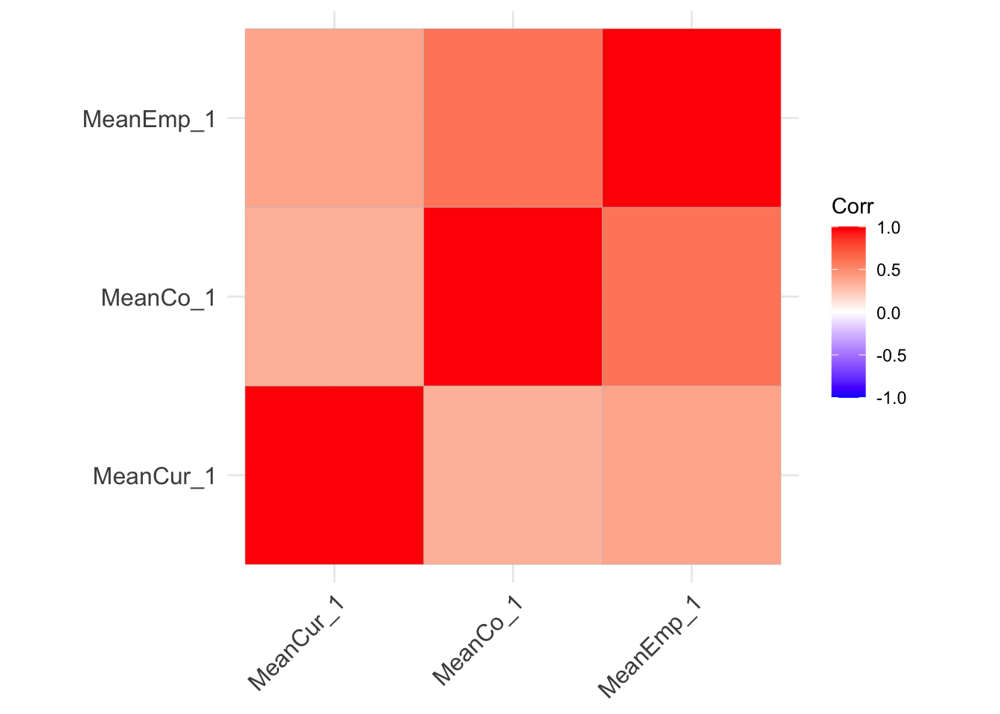
# Perform the PCAdata.pca <-princomp(corr_matrix)summary(data.pca)
Importance of components:
Comp.1 Comp.2 Comp.3
Standard deviation 0.4182690 0.2276612 0
Proportion of Variance 0.7714528 0.2285472 0
Cumulative Proportion 0.7714528 1.0000000 1
# Looking at cumulative proportion explained: Compl1 is 0.5635163 alone then with Comp2: 0.8450691 and with Comp 3 0.92844431# let's find out what those three components are:data.pca$loadings[, 1:3]
# We can plot a Scree plot to see how many components we might needfviz_eig(data.pca, addlabels =TRUE)
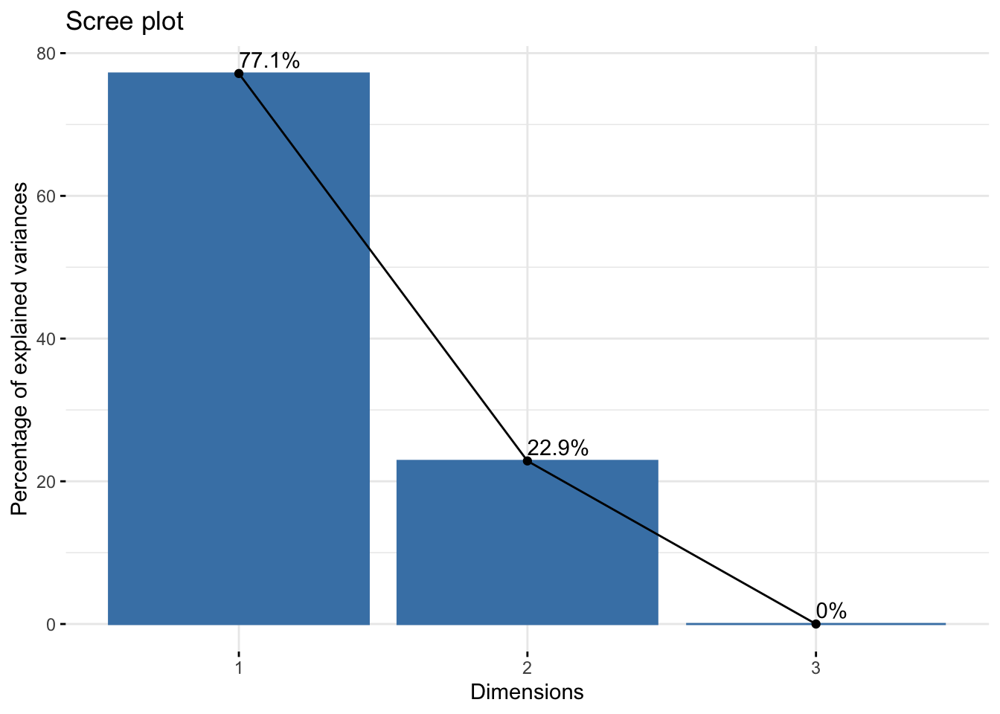
# The elbow looks like at 4# produce a biplotfviz_pca_var(data.pca, col.var ="black")
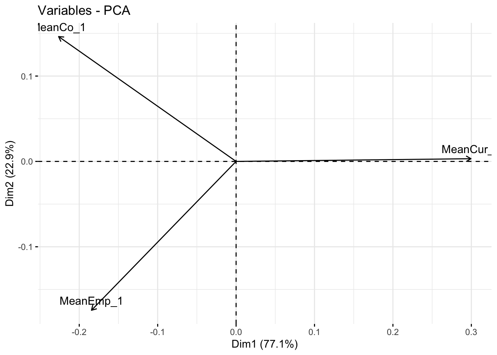
# variables that are grouped together are positively correlated to each other# the higher the distance between the variable and the origin, the better represented that variable is.# variables that are negatively correlated are displayed to the opposite sides of the biplot’s origin# We have a cluster of emotional like traits at the bottom left (empathy, sociability, emotional control), and motivational change at the bottom right (Efficacy, perseverance, optimism), and curiosity on its own a bit (with energy and assertiveness). This could be a more interesting approach to analysis# I tried Exploratory factor analysis, and the data set didn't meet the suitability test - perhaps principal component analysis is the way to go
Structural equation modelling
I have just learned how to do structural equation modelling, which builds a model of some output variable, based on a number of independent variables, which might be useful.
# First we tell lavaan what we want to model, e.g.:model<-"STA_CUR01 ~ SiteID + Gender_Std + st_anxtest"fit<-sem(model, data=SSES)summary(fit)
lavaan 0.6.16 ended normally after 1 iteration
Estimator ML
Optimization method NLMINB
Number of model parameters 4
Used Total
Number of observations 57482 61010
Model Test User Model:
Test statistic 0.000
Degrees of freedom 0
Parameter Estimates:
Standard errors Standard
Information Expected
Information saturated (h1) model Structured
Regressions:
Estimate Std.Err z-value P(>|z|)
STA_CUR01 ~
SiteID -0.001 0.001 -0.501 0.616
Gender_Std -0.074 0.008 -9.925 0.000
st_anxtest 0.002 0.000 6.613 0.000
Variances:
Estimate Std.Err z-value P(>|z|)
.STA_CUR01 0.792 0.005 169.532 0.000
semPaths(fit, whatLabels ="Estimate")
# I like the diagram it produces - I'm going to try using this
Another thing one can do with lavaan is to propose some latent variables and investigate their explanatory effectiveness. We might propose a psychological latent variable (lv1) composed of (st_wellbeing and st_anxtest) and a social environment latent variable (lv2) composed of (st_bully, st_friends, st_belong)
# First we tell lavaan what we want to model, note =~ indicates latent variablesmodel<-"lv1 =~st_wellbeing + st_anxtest lv2 =~ st_bully + st_friends + st_belong STA_CUR01 ~ lv1 + lv2"fit<-sem(model, data=SSES)summary(fit)
lavaan 0.6.16 ended normally after 135 iterations
Estimator ML
Optimization method NLMINB
Number of model parameters 14
Used Total
Number of observations 56955 61010
Model Test User Model:
Test statistic 2247.287
Degrees of freedom 7
P-value (Chi-square) 0.000
Parameter Estimates:
Standard errors Standard
Information Expected
Information saturated (h1) model Structured
Latent Variables:
Estimate Std.Err z-value P(>|z|)
lv1 =~
st_wellbeing 1.000
st_anxtest -0.371 0.009 -43.506 0.000
lv2 =~
st_bully 1.000
st_friends -1.977 0.033 -60.394 0.000
st_belong -2.831 0.047 -60.336 0.000
Regressions:
Estimate Std.Err z-value P(>|z|)
STA_CUR01 ~
lv1 0.009 0.001 8.165 0.000
lv2 -0.021 0.003 -7.939 0.000
Covariances:
Estimate Std.Err z-value P(>|z|)
lv1 ~~
lv2 -28.570 0.522 -54.757 0.000
Variances:
Estimate Std.Err z-value P(>|z|)
.st_wellbeing 82.202 2.223 36.983 0.000
.st_anxtest 162.545 1.008 161.219 0.000
.st_bully 139.913 0.858 163.038 0.000
.st_friends 112.587 0.850 132.439 0.000
.st_belong 52.712 1.087 48.507 0.000
.STA_CUR01 0.766 0.005 166.817 0.000
lv1 99.204 2.371 41.841 0.000
lv2 14.524 0.446 32.545 0.000
semPaths(fit, whatLabels ="Estimate")
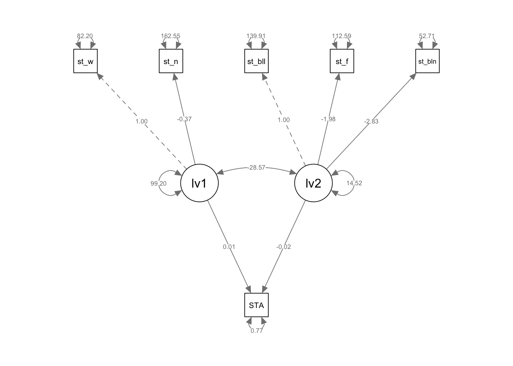
# Neither of the proposed latent variables seem to have much influence!# An alternative is to the use the items to construct latent variables for e.g. cooperation, empathy, emotional controlmodel<-"lv1 =~STA_COO01 + STA_COO02 + STA_COO03+ STA_COO04 + STA_COO05 +STA_COO06 + STA_COO07 lv2 =~ STA_EMP01 + STA_EMP02 + STA_EMP03+ STA_EMP04 + STA_EMP05 +STA_EMP06 + STA_EMP07 lv3 =~ STA_EMO01 + STA_EMO02 + STA_EMO03+ STA_EMO04 + STA_EMO05 +STA_EMO06 + STA_EMO07 STA_CUR01 ~ lv1 + lv2 +lv3"fit<-sem(model, data=SSES)summary(fit)
# Interesting that the empathy latent variable has the highest loading here, and that the loading of the emotion latent variable is negative!
Bayesian Multiple Model Fitting
This approach is not recommended:
“Let the computer find out” is a poor strategy and usually reflects the fact that the researcher did not bother to think clearly about the problem of interest and its scientific setting” - (anderson2004model?)
But the BayesFactor package allows you to generate multiple models, based on different combinations of variables in a data set and compare their predictive power.
# Create a subset of the data frame, including variables we want to include in model building (+ need to remove NAs) SESSsubset<-SSES%>%select(STA_CUR01, SiteID, Gender_Std, STA_ASS01,STA_EMO01, STA_ENE01,STA_OPT01)%>%na.omit()# call regressionBD to create different models for the STA_CUR01 variable using all the other variables in the data frame models<-regressionBF(STA_CUR01 ~ ., data = SESSsubset)
Error in nWayFormula(formula = formula, data = data, dataTypes = dataTypes, :
formal argument "dataTypes" matched by multiple actual arguments
Error in nWayFormula(formula = formula, data = data, dataTypes = dataTypes, :
formal argument "dataTypes" matched by multiple actual arguments
Error in nWayFormula(formula = formula, data = data, dataTypes = dataTypes, :
formal argument "dataTypes" matched by multiple actual arguments
Error in nWayFormula(formula = formula, data = data, dataTypes = dataTypes, :
formal argument "dataTypes" matched by multiple actual arguments
Error in nWayFormula(formula = formula, data = data, dataTypes = dataTypes, :
formal argument "dataTypes" matched by multiple actual arguments
Error in nWayFormula(formula = formula, data = data, dataTypes = dataTypes, :
formal argument "dataTypes" matched by multiple actual arguments
Error in nWayFormula(formula = formula, data = data, dataTypes = dataTypes, :
formal argument "dataTypes" matched by multiple actual arguments
Error in nWayFormula(formula = formula, data = data, dataTypes = dataTypes, :
formal argument "dataTypes" matched by multiple actual arguments
Error in nWayFormula(formula = formula, data = data, dataTypes = dataTypes, :
formal argument "dataTypes" matched by multiple actual arguments
Error in nWayFormula(formula = formula, data = data, dataTypes = dataTypes, :
formal argument "dataTypes" matched by multiple actual arguments
Error in nWayFormula(formula = formula, data = data, dataTypes = dataTypes, :
formal argument "dataTypes" matched by multiple actual arguments
Error in nWayFormula(formula = formula, data = data, dataTypes = dataTypes, :
formal argument "dataTypes" matched by multiple actual arguments
Error in nWayFormula(formula = formula, data = data, dataTypes = dataTypes, :
formal argument "dataTypes" matched by multiple actual arguments
Error in nWayFormula(formula = formula, data = data, dataTypes = dataTypes, :
formal argument "dataTypes" matched by multiple actual arguments
Error in nWayFormula(formula = formula, data = data, dataTypes = dataTypes, :
formal argument "dataTypes" matched by multiple actual arguments
Error in nWayFormula(formula = formula, data = data, dataTypes = dataTypes, :
formal argument "dataTypes" matched by multiple actual arguments
Error in nWayFormula(formula = formula, data = data, dataTypes = dataTypes, :
formal argument "dataTypes" matched by multiple actual arguments
Error in nWayFormula(formula = formula, data = data, dataTypes = dataTypes, :
formal argument "dataTypes" matched by multiple actual arguments
Error in nWayFormula(formula = formula, data = data, dataTypes = dataTypes, :
formal argument "dataTypes" matched by multiple actual arguments
Error in nWayFormula(formula = formula, data = data, dataTypes = dataTypes, :
formal argument "dataTypes" matched by multiple actual arguments
Error in nWayFormula(formula = formula, data = data, dataTypes = dataTypes, :
formal argument "dataTypes" matched by multiple actual arguments
Error in nWayFormula(formula = formula, data = data, dataTypes = dataTypes, :
formal argument "dataTypes" matched by multiple actual arguments
Error in nWayFormula(formula = formula, data = data, dataTypes = dataTypes, :
formal argument "dataTypes" matched by multiple actual arguments
Error in nWayFormula(formula = formula, data = data, dataTypes = dataTypes, :
formal argument "dataTypes" matched by multiple actual arguments
Error in nWayFormula(formula = formula, data = data, dataTypes = dataTypes, :
formal argument "dataTypes" matched by multiple actual arguments
Error in nWayFormula(formula = formula, data = data, dataTypes = dataTypes, :
formal argument "dataTypes" matched by multiple actual arguments
Error in nWayFormula(formula = formula, data = data, dataTypes = dataTypes, :
formal argument "dataTypes" matched by multiple actual arguments
Error in nWayFormula(formula = formula, data = data, dataTypes = dataTypes, :
formal argument "dataTypes" matched by multiple actual arguments
Error in nWayFormula(formula = formula, data = data, dataTypes = dataTypes, :
formal argument "dataTypes" matched by multiple actual arguments
Error in nWayFormula(formula = formula, data = data, dataTypes = dataTypes, :
formal argument "dataTypes" matched by multiple actual arguments
Error in nWayFormula(formula = formula, data = data, dataTypes = dataTypes, :
formal argument "dataTypes" matched by multiple actual arguments
Error in nWayFormula(formula = formula, data = data, dataTypes = dataTypes, :
formal argument "dataTypes" matched by multiple actual arguments
# Select only the relevant part of the outputoutput<-as.data.frame(models@bayesFactor)# Arrange the outputoutput<-output%>%arrange(desc(output$bf))head(output)
# The column we are interested in is bf, the Bayes Factor, which is a ratio of the likelihood of different models to a intercept only model (i.e. a horizontal line). So the best model with the variables I input is: STA_CUR01 ~ Gender_Std + STA_ASS01 + STA_EMO01 + STA_ENE01 + STA_OPT01, which has a bf of 1943 so us 1943 times better than an intercept only modeloutput<-output%>%na.omit()%>%filter(bf>100) # Get rid of NAs and there are lots of combinations of models so only plot the best!ggplot(output, aes(x=reorder(rownames(output), - bf), y=bf, fill=rownames(output)))+geom_col() +theme(axis.text.x =element_text(angle =90, vjust =0.5, hjust=1, size=5))+theme(legend.position ="none")
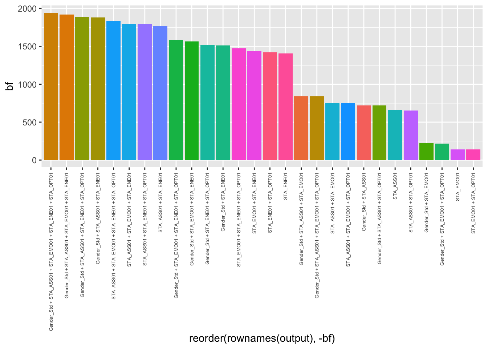
# It is interesting to note how explanatory powerful even quite simple models are: STA_ASS01 + STA_ENE01 does surprisingly well! It explains 91% of the more complex Gender_Std + STA_ASS01 + STA_EMO01 + STA_ENE01 + STA_OPT01# I get an error message when I try to load the BayesFactor package for some reason. I'll keep trying with it... Interesting finding about the fit with assertiveness and energy though!